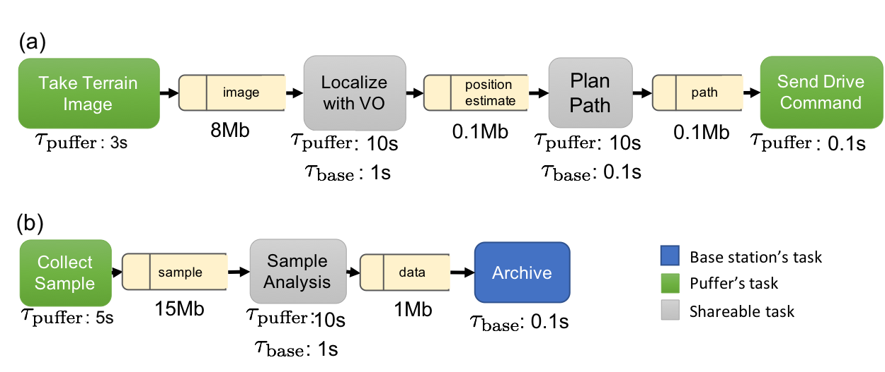
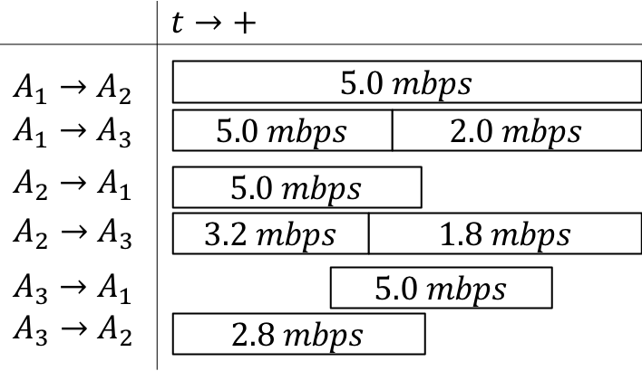

2. Time-varying scheduling algorithm¶
We describe the communication-aware, data-driven computation task scheduling problem for heterogeneous multi-robot systems.
A full description of the algorithm is available in our paper.
2.1. Problem Description¶
2.1.1. Tasks and Software Network¶
We wish to schedule \(M\in\mathbb{Z}^{+}\) data-driven tasks, where \(\mathbb{Z}^{+}\) denotes positive integers. The set of \(M\) tasks is denoted \(\mathbb{T}\). Computational tasks of interest can include, e.g. localizing a robot, computing a motion plan for a robot, classifying and labeling the content of an image , or estimating the spatial distribution of a phenomenon based on point measurements from multiple assets.
Tasks may be required or optional. Required tasks, denoted as \({\mathbb{R}}\subseteq{\mathbb{T}}\), must be included in the schedule. Optional tasks \(T\in {\mathbb{T}}\setminus {\mathbb{R}}\) are each assigned a reward score \(r(T)\), which denotes the value of including the task in a schedule.
The output of each task is a data product. Data products for task \(T\) are denoted as \(d({T})\). The size (in bits) of the data products are known a-priori as \(s\left({T}\right)\) for task \(T\).
Tasks are connected by dependency relations encoded in a software network \(SN\). Let \(P_T\) be a set of predecessor tasks for \(T\). If \(\hat T \in P_T\), task \(T\) can only be executed by a robot if the robot has data product \({d({\hat T})}\). If \(\hat T\) is scheduled to be executed on the same robot as \(T\), \({d({\hat T})}\) is assumed to be available to \(T\) as soon as the computation of \(\hat T\) is concluded. If \(\hat T\) and \(T\) are scheduled on different robots, \({d({\hat T})}\) must be transmitted from the robot executing \(\hat T\) to the robot executing \(T\) before execution of \(T\) can commence. An example of \(SN\) used in our experiments is shown below.
The following two assumptions ensure that a solution to the scheduling problem exists.
Assumption: feasibility There exists a schedule where all required tasks are scheduled.
The software network \(SN\) do not have cycles.
2.1.2. Agents¶
Agents in the network represent computing units. Let there be \(N\in\mathbb{Z}^{+}\) agents in the network. The agents are denoted by \({A_{1}},\thinspace {A_{2}},\thinspace\ldots,\thinspace {A_{N}}\). Each agent has known on-board processing and storage capabilities.
The time and energy cost required to perform a task \(T\) on agent \(i\) are assumed to be known and denoted respectively as \({\tau_{i}\left({T}\right)}\) and \({C_{i}^e\left({T}\right)}\). Depending on the application, time and energy cost can capture the worst-case, expected, or bounded computation time and energy; they are all considered to be deterministic.
2.1.3. Contact Graph¶
Agents can communicate according to a prescribed time-varying contact graph \(CG\) which denotes the availability and bandwidth of communication links between the robots.
\(CG\) is a graph with time-varying edges. Nodes \(\mathcal{V}\) in \(CG\) correspond to agents. For each time instant \(k\), directed edges \(\mathcal{E}_{k}\) model the availability of communication links; that is, \((i, j) \in \mathcal{E}_{k}\) if node \(i\) can communicate to node \(j\) at time \(k\). Each edge has a (time-varying) data rate ranging from \(0\) (not connected) to \(\infty\) (communicating to self), denoted by \({r_{{i}{j}}({k})}\) for the rate from \(A_{i}\) to \(A_{j}\) at time \(k\). An example timeline representation for \(3\) agents with available bandwidths can be seen in the figure below.
A key feature of DTN-based networking is Contact Graph Routing (CGR). CGR takes into account predictable link schedules and bandwidth limits to automate data delivery and optimize the use of network resources. Accordingly, by incorporating DTN’s store-forward mechanism into the scheduling problem, it is possible to use mobile agents as robotic routers to ferry data packets between agents that are not directly connected.
Communicating the data product \(d({T})\) from \(A_{i}\) to \(A_{j}\) at time \(k\) requires time
The following two assumptions model availability of computational resources and the time required to share data products between processes on a single robot.
Assumption: no task concurrency Agents can only perform a single task at any given time, including transmitting or receiving data products.
Agents take \(0\) time to communicate the solution to themselves.
2.1.4. Schedule¶
A schedule is (a) a mapping of tasks to agents and start-times, denoted as \({\mathbb{S}}:T\rightarrow ({A_{i}}, k)\) where \(i\in[1,\ldots,N]\) and \(k\geq0\), and (b) a list of inter-agent communications \(({A_{i}}, {A_{j}}, {d({T})}, k)\) denoting the transmission of \({d({T})}\) from \({A_{i}}\) to \({A_{j}}\) from time \(k\) to time \(\bar k : \left(\int_{k}^{\bar k} {r_{{i}{j}}({\kappa})} d \kappa = {s\left({T}\right)}\right)\).
2.1.5. Optimization Objectives¶
We consider several optimization objectives (formalized in the following section), including:
Optional tasks: maximize the sum of the rewards \(r(T)\) for optional tasks \(T\) that are included in the schedule;
Makespan: minimize the maximum completion time of all scheduled tasks;
Energy cost: minimize the sum of the energy costs \({C_{i}^e\left({T}\right)}\) for tasks included in the schedule;
2.1.6. Scheduling Problem¶
We are now in a position to state the communication-aware, data-driven computation task scheduling problem for heterogeneous multi-robot systems.
Communication-aware, data-driven computation task scheduling problem for heterogeneous multi-robot systems Given a set of tasks modeled as a software network \(SN\), a list of computational agents \(A_{i}\), \(i\in[1\ldots N]\), a contact graph \(CG\), and a maximum schedule length \(C^\star\), find a schedule that satisfies:
The maximum overall computation time is no more than \(C^\star\);
All required tasks \(T\in \mathbb{R}\) are scheduled;
A task \(T\) is only scheduled on agent \({A_{i}}\) at time \(k\) if the agent has received all the data product \({d({\hat T})}\) for predecessor tasks \(\hat T \in P_T\);
Every agent performs at most one task (including transmitting and receiving data products) at any time;
The selected optimization objective is maximized.
2.1.7. Notes on Problem Assumptions¶
The assumption that a feasible schedule including all required tasks exists is appropriate for multi-robot systems where each required task “belongs” to a specific robot (i.e., the task is performed with inputs collected by the robot, and the output of the task is to be consumed by the same robot). Examples of such tasks include localization, mapping, and path planning. In such a setting, it is reasonable to assume that each robot should be able to perform all of its own required tasks with no assistance from other computation nodes; on the other hand, cooperation between robots can decrease the makespan, reduce energy use, and enable the completion of optional tasks.
The contact graph is assumed to be known in advance. This assumption is reasonable in many space applications, specifically in surface-to-orbit communications, orbit-to-orbit communications, and surface-to-surface communication in unobstructed environments, where the capacity of the communication channel can be predicted to a high degree of accuracy. In obstructed environments where communication models are highly uncertain (e.g. subsurface voids such as caves, mines, tunnels) a conservative estimate of the channel capacity could be used. Extending the scheduling problem to explicitly capture uncertainty in the communication graph is an interesting direction for future research.
Finally, the scheduling problem also assumes that the communication graph is not part of the optimization process. The problem of optimizing the contact graph by prescribing the agents’ motion is beyond the scope of this paper; however, we remark that the tools in this paper can be used as an optimization subroutine to numerically assess the effect of proposed changes in the contact graph on the performance of the multi-robot system.
2.2. ILP formulation¶
We formulate the Scheduling Problem as an integer linear program (ILP). We consider a discrete-time approximation of the problem with a time horizon of \({C^\star_d}\) time steps, each of duration \(C^\star/{C^\star_d}\), corresponding to the maximum schedule length \(C^\star\). The optimization variables are:
\(X\), a set of Boolean variables of size \(N\cdot M \cdot {C^\star_d}\). \(X(i,T,k)\) is true if and only if agent \(A_i\) starts computing task \(T\) at time \(k\).
\(D\), a set of Boolean variables of size \(N \cdot M \cdot {C^\star_d}\). \(D(i,T,k)\), is true if and only if agent \(A_i\) has stored the data products \(d(T)\) of task \(T\) at time \(k\).
\(C\), a set of Boolean variables of size \(N^2 \cdot M \cdot {C^\star_d}\). \(C(i,j,T,k)\), is true if and only if agent \(A_i\) communicates part or all of data products \({d({T})}\) to agent \(A_j\) at time \(k\).
The optimization objective \(R\) can be expressed as follows:
Maximize the sum of the rewards for completed optional tasks:
We are now in a position to formally state the ILP formulation of the problem:
The first constraint ensures that all required tasks are performed, and the second constraint that optional tasks are performed at most once. The third constraint requires that agents only start a task if they have access to the data products of all its predecessor tasks. The fourth constraint captures the agents’ limited computation resources by enforcing the no-concurrency assumption. The fifth constraint ensures that agents learn the content of a task’s data products only if they (i) receive such information from other agents (possibly over multiple time steps, each carrying a fraction \(r_{ij}(k)/{s\left({T}\right)}\) of the data product) or (ii) complete the task themselves. The sixth constraint ensures that agent only communicate a data product if they have stored the data product themselves. Finally, the seventh and last constraint models the fact that data products are initially unknown to all agents.
The ILP has \(N^2M{C^\star_d}+2NM{C^\star_d}\) Boolean variables and \(M(N(3{C^\star_d}-1)+N )+N{C^\star_d}\) constraints; instances with dozens of agents and tasks and horizons of 50–100 time steps can be readily solved by state-of-the-art ILP solvers.
2.2.1. Modeling Extensions: Modeling Network Interference¶
The ILP formulation is amenable to several modeling extensions. In this section, we show how the bandwidth constraints can be modified to capture network interference caused by the agents’ communications, a critical consideration for close-range operations.
In the formulation, link bandwidths \(r_{ij}\) are assumed to be fixed and independent of each other: that is, the communication bandwidth \(r_{ij}\) on a link is assumed to be achievable regardless of communication activity on other links. This assumption can be inaccurate for systems where many robots operate in close proximity and share the same wireless channel; in such a setting, interference introduces a coupling between the achievable bandwidths on different links, and the overall amount of data that can be exchanged by interfering links is limited by the channel capacity of the shared physical medium.
The formulation can be extended to capture a first-order approximation of this effect, letting individual link bit rates be decision variables subject to constraints on the overall channel capacity.
Effectively, agents are allowed to use less than the full capacity of individual links to ensure that their transmissions do not cause interference on other links sharing the same wireless channel.
To this end, we define an additional set of real-valued decision variables \(R\) of size \(N^2 \cdot M \cdot {C^\star_d}\). \(R(i,j,T,k)\) denotes the amount of bits of the data product of task \(T\) that is transmitted from agent \(i\) to agent \(j\) in time interval \(k\).
We assume that, for each discrete time interval \(k\) and for each subset \(I\in \mathbb{I}\subset 2^{N^2}\) of links subject to mutual interference, the interfering links’ channel capacity \(r(I, k)\) (that is, the overall amount of bits that links in \(I\) can simultaneously transmit) is known. In order to avoid introducing an exponential number of constraints, it is desirable to consider a modest number of sets of interfering links. For instance, if all robots are operating in close proximity and can interfere with each other, the overall bandwidth of all links should be constrained to be smaller than the capacity of the shared channel.
The fifth constraint in the formulation above is replaced by the following equations:
The first constraint ensures that the effective bit rate on a link is nonzero only if a communication occurs on the link; The second constraint models the process by which robots learn data products through communication, closely following its counterpart in the previous formulation; and the third constraint ensures that the sum of all effective bit rates on interfering links does not exceed the channel capacity.
2.3. Implementation¶
The function JSONSolver provides
an easy interface to the task allocation solver.
For a full description of all available interfaces, see Time-varying scheduling algorithm: full implementation.
-
class
mosaic_schedulers.schedulers.tv_milp.MOSAICSolver.JSONSolver(JSONProblemDescription='', solver='CPLEX', Verbose=False, TimeLimit=None)[source] The main interface to solve MOSAIC scheduling problems
- Parameters
JSONProblemDescription (str, optional) – a JSON description of the problem. See the API reference for a detailed description. Defaults to ‘’
solver (str, optional) – the solver to use. Should be ‘GLPK’, ‘CPLEX’, ‘PuLP’ or ‘SCIP’, defaults to ‘CPLEX’
Verbose (bool, optional) – whether to print status and debug messages. Defaults to False
TimeLimit (float, optional) – a time limit after which to stop the optimizer. Defaults to None (no time limit). Note that certain solvers (GLPK) may not honor the time limit.
- Raises
ValueError – if the JSONProblemDescription is not valid.
2.4. References¶
Joshua Vander Hook, Tiago Vaquero, Federico Rossi, Martina Troesch, Marc Sanchez Net, Joshua Schoolcraft, Jean-Pierre de la Croix, and Steve Chien, “Mars On-Site Shared Analytics Information and Computing,” in Proceedings of the Twenty-Ninth International Conference on Automated Planning and Scheduling, vol. 29, no. 1, pp. 707-715, July 2019.